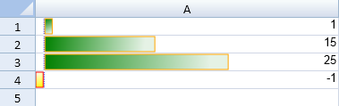

SpreadJS supports the data bar rule.
The data bar rule uses a bar that is displayed as the background for each cell. The length of the bar corresponds to the size of the data relative to the other data in the sheet. The longer the bar, the greater the value in the cell.
You can specify the minimum and maximum type and the value to compare in the conditional format. The minType method can be set to Number, LowestValue, HighestValue, Percent, Formula, Percentile, and Automin, or Automax.

You can use the addDataBarRule method to create a rule and add it to the collection. The BarDirection and DataBarAxisPosition types can be used to specify the data bar direction and axis position.
This example creates a data bar rule and uses the addRule method to add the rule.
| JavaScript |
Copy Code
|
|---|---|
activeSheet.setValue(0,0,1,3); activeSheet.setValue(1,0,15,3); activeSheet.setValue(2,0,25,3); activeSheet.setValue(3,0,-1,3); var dataBarRule = new GC.Spread.Sheets.ConditionalFormatting.DataBarRule(GC.Spread.Sheets.ConditionalFormatting.ScaleValueType.Number, -1, GC.Spread.Sheets.ConditionalFormatting.ScaleValueType.Number, 40, "green", [new GC.Spread.Sheets.Range(0,0,4,1)]); dataBarRule.color("green"); dataBarRule.showBorder(true); dataBarRule.borderColor("orange"); dataBarRule.dataBarDirection(GC.Spread.Sheets.ConditionalFormatting.BarDirection.LeftToRight); dataBarRule.negativeFillColor("yellow"); dataBarRule.useNegativeFillColor(true); dataBarRule.negativeBorderColor("red"); dataBarRule.useNegativeBorderColor(true); dataBarRule.axisPosition(GC.Spread.Sheets.ConditionalFormatting.DataBarAxisPosition.Automatic); dataBarRule.axisColor("blue"); dataBarRule.showBarOnly(false); activeSheet.conditionalFormats.addRule(dataBarRule); |
|